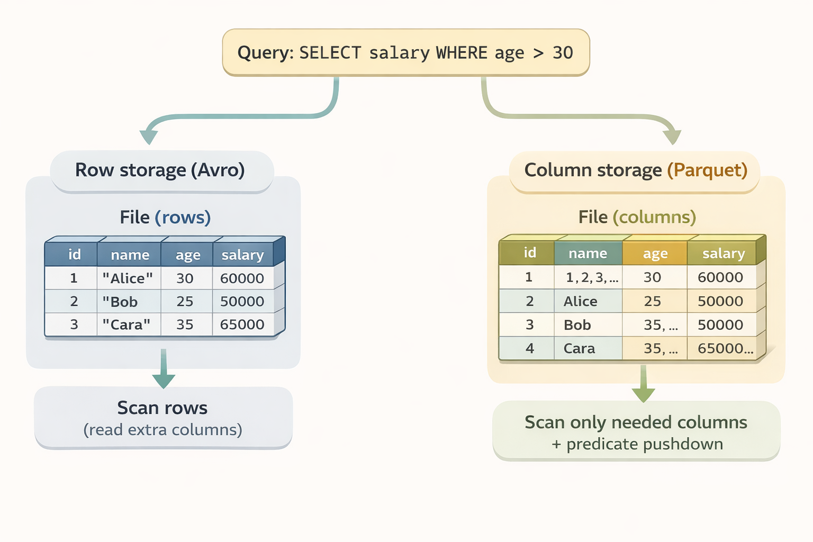
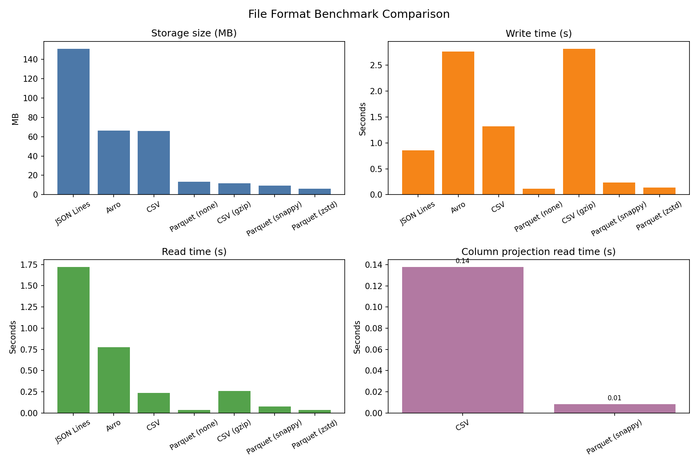

Introduction
As data engineers, we constantly deal with files, receiving them from external systems, processing them through pipelines and storing them efficiently. Yet the choice of file format is often an afterthought, despite having significant implications on storage costs, query performance and pipeline reliability.
This guide covers the formats you’ll encounter as sources, the formats you should choose for storage and when to use each.
Part 1: Source Formats (What You Receive)
These are formats you typically receive from external systems, APIs, or business users. You rarely choose them, you adapt to them.
CSV (Comma-Separated Values)
The universal exchange format. Everyone can produce it, everyone can read it.
order_id,customer_id,order_date,total_amount,status
1001,C-0042,2024-01-05,129.90,paid
1002,C-0081,2024-01-06,58.50,refunded
1003,C-0107,2024-01-06,12.00,paidimport pandas as pd
# Basic reading
df = pd.read_csv("sales.csv")
# Real-world CSV: handling quirks
df = pd.read_csv(
"messy_data.csv",
sep=";", # European systems love semicolons
encoding="latin-1", # Because UTF-8 would be too easy
decimal=",", # 1.234,56 instead of 1,234.56
na_values=["", "NULL", "N/A", "-"],
dtype={"zip_code": str} # Prevent 01234 → 1234
)The good:
- Human-readable, easy to debug
- Universal compatibility
- Small files compress well
The bad:
- No schema enforcement, types are guessed or lost
- No native support for nested data
- Encoding hell (UTF-8? Latin-1? Windows-1252?)
- Delimiter conflicts (what if your data contains commas?)
- Large files are slow to parse
Watch out for:
- Leading zeros getting stripped (zip codes, IDs)
- Date format ambiguity (01/02/2024: January 2nd or February 1st?)
- Newlines inside quoted fields
- Mixed encodings within the same file (yes, it happens)
JSON (JavaScript Object Notation)
The API standard. If you’re pulling data from a REST API, you’re getting JSON.
{
"order_id": 1001,
"customer": {"id": "C-0042", "name": "Alice"},
"items": [
{"sku": "BK-001", "qty": 1, "price": 29.90},
{"sku": "AC-123", "qty": 2, "price": 50.00}
]
}import json
# Single JSON object
with open("config.json") as f:
config = json.load(f)
# JSON Lines (JSONL) - one object per line
import pandas as pd
df = pd.read_json("events.jsonl", lines=True)
# Nested JSON requiring flattening
data = {"user": {"name": "Alice", "address": {"city": "Paris"}}}
# You'll need to decide: flatten or keep nested?The good:
- Self-describing with keys
- Handles nested/hierarchical data naturally
- Native support in most programming languages
- Human-readable
The bad:
- Verbose: keys repeated for every record
- No native date/datetime type
- Large files are memory-intensive to parse
- Schema can vary between records
JSON vs JSON Lines:
| Aspect | JSON | JSON Lines (.jsonl) |
|---|---|---|
| Structure | Single array/object | One JSON object per line |
| Streaming | Must load entire file | Can process line by line |
| Use case | API responses, configs | Log files, data exports |
XML (eXtensible Markup Language)
Still prevalent in enterprise systems, SOAP APIs, and legacy integrations.
<order id="1001" status="paid">
<customer id="C-0042">Alice</customer>
<items>
<item sku="BK-001" qty="1" price="29.90" />
<item sku="AC-123" qty="2" price="50.00" />
</items>
</order>import xml.etree.ElementTree as ET
tree = ET.parse("data.xml")
root = tree.getroot()
# Navigating XML is verbose
for item in root.findall(".//order"):
order_id = item.find("id").text
amount = item.find("amount").textThe good:
- Rich schema validation (XSD)
- Handles complex hierarchical data
- Mature tooling in enterprise environments
The bad:
- Extremely verbose
- Painful to parse compared to JSON
- Overkill for simple data structures
When you’ll encounter it: Bank feeds, government APIs, older ERP systems, SOAP services.
Excel (.xlsx, .xls)
The format that refuses to die. Business users love it.
import pandas as pd
# Simple read
df = pd.read_excel("report.xlsx", sheet_name="Data")
# Real-world Excel: multiple sheets, specific ranges
df = pd.read_excel(
"report.xlsx",
sheet_name="Q4 Sales",
skiprows=3, # Skip header rows
usecols="B:F", # Only specific columns
dtype={"Product ID": str} # Prevent type coercion
)
# Reading all sheets
all_sheets = pd.read_excel("report.xlsx", sheet_name=None) # Returns dictThe good:
- Familiar to business users
- Can contain multiple sheets, formatting, formulas
- Widely supported
The bad:
- Not designed for large datasets (slow, memory-intensive)
- Hidden formatting issues (merged cells, formulas returning errors)
- Type coercion surprises
- Binary format makes debugging harder
Watch out for:
- Merged cells breaking your parsing
- Dates stored as numbers (Excel’s date serial format)
- Formulas that return
#REF!or#N/A - Hidden rows/columns
Fixed-Width Files
Common in banking, mainframe exports, and government data.
import pandas as pd
# You need to know the exact column positions
df = pd.read_fwf(
"mainframe_export.txt",
colspecs=[(0, 10), (10, 30), (30, 40), (40, 50)],
names=["account_id", "name", "balance", "date"]
)When you’ll encounter it: COBOL system exports, ACH files, census data.
A Note on Unstructured Data
While this guide focuses on structured and semi-structured data, you may occasionally need to handle:
- Images/Video: Usually stored as binary blobs, metadata extracted separately
- Audio: Similar to video, store raw, process with specialized tools
- PDFs: Extract text with libraries like
pdfplumberorpymupdf, but expect inconsistencies - Documents (.docx): Use
python-docxfor extraction
For these formats, the pattern is typically: extract what you can into structured format, store the original as a reference.
Part 2: Storage Formats (What You Choose)
This is where you have control. The right choice depends on your query patterns, storage constraints, and tooling.
The Big Picture
| Format | Type | Best For | Avoid When |
|---|---|---|---|
| Parquet | Columnar | Analytics, large datasets | Row-level operations |
| Avro | Row-based | Streaming, schema evolution | Ad-hoc analytics |
| ORC | Columnar | Hive ecosystem | Non-Hadoop environments |
| CSV | Row-based | Small files, compatibility | Large datasets, typed data |
| JSON | Row-based | Semi-structured, flexibility | Large-scale analytics |
Columnar vs Row-Based Storage
Before diving into specific formats, it’s worth understanding the two fundamental storage approaches.
Row-based storage (CSV, JSON, Avro) stores data record by record. To read a single column, you must scan through every row.
Columnar storage (Parquet, ORC) stores data column by column. Queries that only need specific columns skip the rest entirely.

When row-based wins:
- Writing complete records frequently (streaming, event logging)
- Reading entire rows (fetch user by ID, get full order details)
- Fast appends (logs, message queues)
- Processing records one at a time
When columnar wins:
- Reading few columns across many rows (analytical queries)
- Aggregations (SUM, AVG, COUNT)
- Storage efficiency (similar values compress better together)
- Predicate pushdown (skip irrelevant data at storage level)
Think of it this way:
- Row-based = optimized for “give me everything about this one record”
- Columnar = optimized for “give me this field across millions of records”
That’s why Kafka + Avro is a classic combo (streaming = lots of writes, full records), while data warehouses use Parquet (analytics = lots of reads, few columns).
Parquet
The de facto standard for analytical workloads. If you’re building a data lake, you’re probably using Parquet.
import pandas as pd
import pyarrow as pa
import pyarrow.parquet as pq
# Writing Parquet
df = pd.DataFrame({"id": [1, 2, 3], "value": [10.5, 20.3, 30.1]})
df.to_parquet("data.parquet")
# With compression options
df.to_parquet("data.parquet", compression="snappy") # Fast, widely supported
df.to_parquet("data.parquet", compression="gzip") # Better compression, slower
df.to_parquet("data.parquet", compression="zstd") # Best compression/speed ratio (check tool compatibility)
# Reading specific columns (the magic of columnar storage)
df = pd.read_parquet("data.parquet", columns=["id", "value"])
# Partitioned writes for large datasets
table = pa.Table.from_pandas(df)
pq.write_to_dataset(
table,
root_path="data/",
partition_cols=["year", "month"]
)Why Parquet wins for analytics:
- Columnar storage: Only reads the columns you need
- Compression: Similar data in columns compresses extremely well
- Predicate pushdown: Filters applied at storage level
- Embedded schema metadata: Types are stored in the file metadata to guide readers and reduce type ambiguity
- Ecosystem support: Spark, Pandas, DuckDB, BigQuery, Snowflake…
How predicate pushdown works:
Parquet files are organized into row groups, and each group stores metadata, specifically the min and max values for every column. When you run a query like SELECT salary WHERE age > 30, the reader checks this metadata first. If a row group’s max age is 25, the engine skips that entire block without reading the actual data. This drastically reduces I/O on large datasets.
The tradeoffs:
- Not human-readable
- Appending to a single file requires rewriting it (though you can append new files to a dataset)
- Overkill for tiny files
Avro
Row-based format with strong schema support. Popular in streaming and event-driven architectures.
import fastavro
# Define schema
schema = {
"type": "record",
"name": "User",
"fields": [
{"name": "id", "type": "int"},
{"name": "name", "type": "string"},
{"name": "email", "type": ["null", "string"], "default": None}
]
}
# Write Avro
records = [
{"id": 1, "name": "Alice", "email": "alice@example.com"},
{"id": 2, "name": "Bob", "email": None}
]
with open("users.avro", "wb") as f:
fastavro.writer(f, schema, records)
# Read Avro
with open("users.avro", "rb") as f:
reader = fastavro.reader(f)
for record in reader:
print(record)Why Avro for streaming:
- Schema evolution: Add/remove fields without breaking consumers
- Schema registry integration: Kafka + Avro is a classic combo
- Row-based: Efficient for writing complete records
- Compact binary format: Smaller than JSON
The tradeoffs:
- Poor for analytical queries (must read all columns)
- Less ecosystem support for analytical querying than Parquet
- Requires schema management
ORC (Optimized Row Columnar)
Columnar format optimized for Hive and the Hadoop ecosystem.
import pyarrow.orc as orc
import pyarrow as pa
# Writing ORC
table = pa.table({"id": [1, 2, 3], "value": ["a", "b", "c"]})
orc.write_table(table, "data.orc")
# Reading ORC
table = orc.read_table("data.orc")ORC vs Parquet:
- ORC has better compression in some cases
- Parquet has broader ecosystem support
- ORC is native to Hive; Parquet is more universal
Practical advice: Unless you’re deep in the Hadoop/Hive ecosystem, default to Parquet.
Delta Lake / Iceberg / Hudi
Not file formats per se, but table formats built on Parquet that add:
- ACID transactions
- Time travel (query historical versions)
- Schema evolution
- Efficient upserts
If you’re building a production data lake on Databricks (Delta) or in a cloud-agnostic way (Iceberg), these are worth exploring.
Part 3: Comparison Deep Dive
Storage Efficiency
Testing with a 1M row dataset (7 columns: id, value, category, description, date, is_active, quantity).
Benchmark run on Python 3.12, pandas 2.2, pyarrow 19. Results will vary based on hardware, data characteristics, and library versions. The benchmark script is available if you want to reproduce with your own data.
The chart below compares file size, write time, and read time for the same 1M-row dataset across formats:

| Format | File Size | Write Time | Read Time |
|---|---|---|---|
| CSV | 65.9 MB | 1.14s | 0.22s |
| CSV (gzip) | 11.7 MB | 2.70s | 0.25s |
| JSON Lines | 150.8 MB | 0.79s | 1.47s |
| Parquet (snappy) | 9.3 MB | 0.13s | 0.05s |
| Parquet (zstd) | 6.3 MB | 0.13s | 0.03s |
| Parquet (none) | 13.4 MB | 0.11s | 0.03s |
| Avro | 66.2 MB | 2.63s | 0.77s |
Key observations:
- Parquet (zstd) achieves the best compression (6.3 MB) while being the fastest to read
- JSON Lines is the most verbose at 150.8 MB, keys repeated for every record add up
- CSV (gzip) offers decent compression but doubles the write time
- Avro write performance suffers from the Python implementation (fastavro), JVM-based systems perform better
Column Projection
Reading only 2 of 7 columns from the same 1M row dataset:
| Format | Time |
|---|---|
| CSV | 0.13s |
| Parquet (snappy) | 0.01s |
This is where columnar formats shine, Parquet is 13x faster because it only reads the columns you need, while CSV must parse the entire file regardless.
Schema Evolution Support
| Format | Add Column | Remove Column | Rename Column | Change Type |
|---|---|---|---|---|
| CSV | N/A | N/A | N/A | N/A |
| JSON | ✅ | ✅ | ❌ | ⚠️ |
| Parquet | ✅ | ✅ | ❌* | ⚠️ |
| Avro | ✅ | ✅ | ✅ (aliases) | ⚠️ |
⚠️ = Possible with compatible types (e.g., int → long) * Note on Renaming: While raw Parquet files do not natively support column renaming (it requires a file rewrite), modern Table Formats like Apache Iceberg or Delta Lake handle this via metadata mapping. They allow you to rename columns logically without touching the underlying Parquet files.
Part 4: Decision Framework
For Ingestion Pipelines
Source format is CSV/Excel/JSON?
↓
Validate and convert to Parquet early
↓
Store raw files in a "raw" zone (for debugging/replay)
↓
Process and store in Parquet in "processed" zone
Choosing Your Storage Format
Use Parquet when:
- Building a data lake or warehouse
- Running analytical queries (aggregations, filters)
- Storage cost matters
- Using Spark, Pandas, DuckDB, or any modern data tool
Use Avro when:
- Streaming data (Kafka)
- Schema evolution is critical
- Row-level operations dominate
- You need a schema registry
Use CSV/JSON when:
- Exchanging data with external systems
- Files are small (<10MB) and infrequently accessed
- Human readability is important
- Quick debugging or exploration
Use ORC when:
- You’re in a Hive-heavy environment
- Already invested in Hadoop ecosystem
Partitioning Strategy & The Small File Problem
For large datasets, your partitioning strategy is as critical as your format choice. However, engineers often fall into the trap of over-partitioning, which leads to the Small File Problem.
# Good: Partition by commonly filtered columns
# data/market=FR/date=2024-01-15/data.parquet
# Bad: Over-partitioning creates too many small files
# data/market=FR/date=2024-01-15/hour=14/minute=30/data.parquetParquet and Avro have metadata overhead. If you partition so granularly that you create thousands of tiny files, the metadata becomes larger than the actual data. Your query engine will spend more time opening and closing files than actually processing records.
In my tests, splitting 1M rows into 1,000 small files instead of a single file added 32% storage overhead and 1.4x read latency and this penalty grows significantly with cloud storage (S3 list operations) and distributed engines (Spark task scheduling). See the benchmark script to test with your own data.
Rules of thumb:
- Target Size: Aim for individual files between 128MB and 1GB.
- Filter Frequently: Only partition by columns you use in nearly every
WHEREclause (e.g.,dateorregion). - Avoid High Cardinality: Never partition by a column like
user_idororder_timestamp.
Key Takeaways
-
Separate source from storage: Accept the messy JSON/CSV you receive, but convert to Parquet or Avro as soon as it enters your “Bronze” or “Raw” layer.
-
Parquet is your default for Analytics: For 90% of data lake use cases, Parquet’s columnar compression and predicate pushdown make it the winner for both speed and storage efficiency.
-
Efficiency = Cost Savings: Choosing Parquet isn’t just a technical preference, it’s a financial one. Because cloud data warehouses (BigQuery, Athena, Snowflake) often charge based on the amount of data scanned, reducing your I/O via columnar storage can reduce your cloud bill by 80-90% compared to scanning raw JSON.
-
Keep raw data: Always store the original files before transformation for debugging and potential re-processing.
-
Schema matters: Use schema-on-write formats (Avro, Parquet) to catch data quality issues at the source rather than letting them break your downstream dashboards.
File formats are foundation. Get them right, and your pipelines will be faster, cheaper, and more reliable. Get them wrong, and you’ll spend your time fighting tooling instead of solving problems.